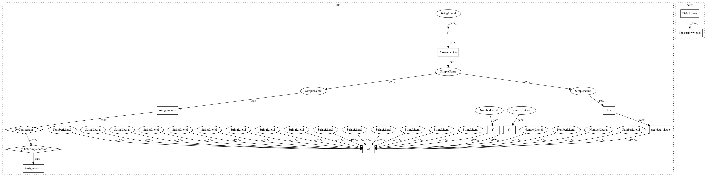

ce4a5ca7cab1ea4ae421fbcd3b28205b1e18158d,deepchem/models/tests/test_overfit.py,TestOverfitAPI,test_tf_skewed_missing_classification_overfit,#TestOverfitAPI#,475
Before Change
possible.
tasks = ["task0"]
task_types = {task: "classification" for task in tasks}
n_samples = 5120
n_features = 6
n_tasks = len(tasks)
n_classes = 2
// Generate dummy dataset
np.random.seed(123)
p = .002
ids = np.arange(n_samples)
X = np.random.rand(n_samples, n_features)
y = np.random.binomial(1, p, size=(n_samples, n_tasks))
w = np.ones((n_samples, n_tasks))
y_flat, w_flat = np.squeeze(y), np.squeeze(w)
y_nonzero = y_flat[w_flat != 0]
num_nonzero = np.count_nonzero(y_nonzero)
weight_nonzero = len(y_nonzero)/num_nonzero
w_flat[y_flat != 0] = weight_nonzero
w = np.reshape(w_flat, (n_samples, n_tasks))
dataset = Dataset.from_numpy(self.train_dir, X, y, w, ids, tasks)
model_params = {
"layer_sizes": [1200],
"dropouts": [.0],
"learning_rate": 0.003,
"momentum": .9,
"batch_size": 75,
"num_classification_tasks": 1,
"num_classes": n_classes,
"num_features": n_features,
"weight_init_stddevs": [1.],
"bias_init_consts": [1.],
"nb_epoch": 250,
"penalty": 0.0,
"optimizer": "adam",
"data_shape": dataset.get_data_shape()
}
verbosity = "high"
classification_metric = Metric(metrics.roc_auc_score, verbosity=verbosity)
model = TensorflowModel(
After Change
n_tasks, n_features, self.model_dir, dropouts=[0.],
learning_rate=0.003, weight_init_stddevs=[1.],
batch_size=n_samples, verbosity=verbosity)
model = TensorflowModel(tensorflow_model, self.model_dir)
// Fit trained model
model.fit(dataset, nb_epoch=50)
model.save()
In pattern: SUPERPATTERN
Frequency: 3
Non-data size: 13
Instances
Project Name: deepchem/deepchem
Commit Name: ce4a5ca7cab1ea4ae421fbcd3b28205b1e18158d
Time: 2016-09-19
Author: bharath.ramsundar@gmail.com
File Name: deepchem/models/tests/test_overfit.py
Class Name: TestOverfitAPI
Method Name: test_tf_skewed_missing_classification_overfit
Project Name: deepchem/deepchem
Commit Name: ce4a5ca7cab1ea4ae421fbcd3b28205b1e18158d
Time: 2016-09-19
Author: bharath.ramsundar@gmail.com
File Name: deepchem/models/tests/test_overfit.py
Class Name: TestOverfitAPI
Method Name: test_tf_classification_overfit
Project Name: deepchem/deepchem
Commit Name: ce4a5ca7cab1ea4ae421fbcd3b28205b1e18158d
Time: 2016-09-19
Author: bharath.ramsundar@gmail.com
File Name: deepchem/models/tests/test_overfit.py
Class Name: TestOverfitAPI
Method Name: test_tf_skewed_missing_classification_overfit
Project Name: deepchem/deepchem
Commit Name: ce4a5ca7cab1ea4ae421fbcd3b28205b1e18158d
Time: 2016-09-19
Author: bharath.ramsundar@gmail.com
File Name: deepchem/models/tests/test_overfit.py
Class Name: TestOverfitAPI
Method Name: test_tf_regression_overfit